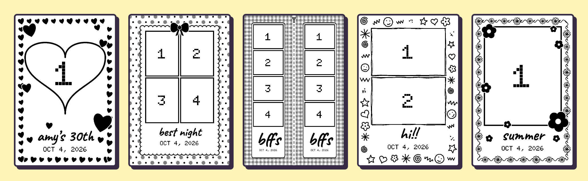

Selfie booth
Guests pick how many photos and a pattern, pose for the iPad, and walk away with a little thermal print.
Download for MacFree and small. Works with a Mac, an iPad and a Rollo USB label printer.

Set it up
- 1Open the download. Double-click the ZIP in your Downloads folder, then double-click Start Booth inside. If the Mac won't open it, go to System Settings, Privacy & Security, and click Open Anyway.
- 2Scan the code. The Mac shows a QR code. Point the iPad camera at it. The first time, the iPad walks you through a one-time setup (about 2 minutes).
- 3Take photos. Add the booth to the iPad's Home Screen. Next time it's just: double-click Start Booth, tap the icon.
Mac mini with no screen
The booth can run on a Mac mini tucked behind the printer, with no monitor. Set it up once at home with a screen, keyboard and mouse (any TV with HDMI works), then take just the Mac mini to events.
- 1Set up at home. Do the three steps above with a screen attached. Then on the Mac mini, join your phone's hotspot once from the Wi-Fi menu at the top right, so it can rejoin it anywhere. (Or plug the Mac mini into the router with an Ethernet cable.)
- 2Turn on automatic start. In the selfie-booth folder, double-click Start Automatically. In System Settings, Users & Groups, set Automatically log in to your account, so the booth starts as soon as the Mac mini is switched on.
- 3At the event. Turn on your phone's hotspot and join the iPad to it too. Plug in the printer and switch on the Mac mini. After about a minute, tap the booth icon on the iPad.
If the iPad can't find the booth, open http://selfie-booth.local:8000 in Safari. If Automatically log in is greyed out (FileVault is on), switch the Mac mini on, wait a minute, then type your password and press Return without a screen. To turn automatic start off, double-click Stop Starting Automatically.
What you need
- A Mac (a MacBook, or a Mac mini with no screen)
- An iPad on the same Wi-Fi
- A Rollo USB label printer (X1038), plugged into the Mac
- 4 x 6 direct thermal labels
More
Step-by-step guide with fixes for common problems: Start here. Code and details: github.com/amywork777/selfie-booth.